PARSONS SCHOOL OF DESIGN
BFA COMMUNICATION DESIGN 2026
SENIOR THESIS SHOW
MAKING SPACE is the student-led Senior Thesis Showcase by the BFA Communication Design Class of 2026 at Parsons School of Design.
The exhibition features a wide range of thesis projects, including web platforms, publications, editorial systems, educational tools, interactive experiences, games, motion graphics, and experimental digital products. RSVP to come support the amazing work by our graduating students!
39 WEST 13TH STREET, 2ND FLOOR
FRIDAY, APRIL 17TH, 2026
10:00 AM – 7:00 PM
FRIDAY, APRIL 17TH, 2026
10:00 AM – 7:00 PM